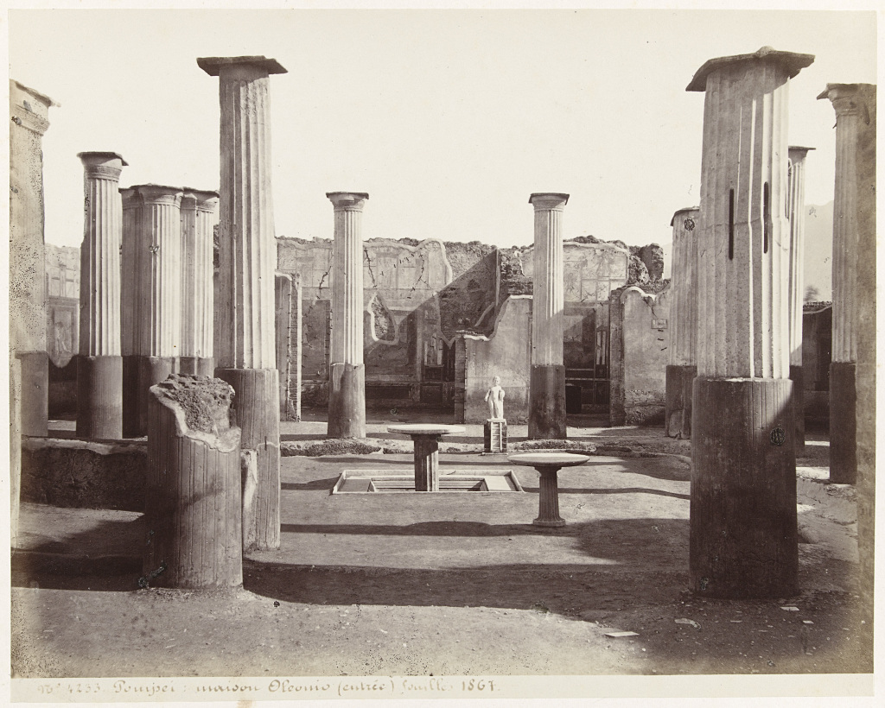

Oltre alle tracce materiali della città antica la Soprintendenza Speciale per i beni Archeologici di Pompei, Ercolano e Stabia (SAPES) custodisce la documentazione fotografica, video e cartacea di quelle stesse tracce. Sono documenti importanti, che in alcuni casi raffigurano elementi oggi scomparsi e che raccontano gli sforzi fatti dagli archeologi per tramandare ai posteri un patrimonio unico. Si tratta di un archivio documentale ingente. Nei fondi della SAPES sono custoditi circa 130.000 negativi su pellicola, 9.900 negativi su lastre di vetro, 34.500 diapositive, 9.000 diacolor, 6500 pagine di inventari reperti, 4800 pagine tra Librette Antiquarium e Librette di rivenimento reperti, 1800 pagine di note di spedizione, 9300 pagine di diari di scavo sia manoscritti, sia dattiloscritti e 150 nastri video su differenti formati analogici originali. Una quantità di documenti che una volta trasformati in bit andrà a occupare uno spazio (stimato) di 40 Terabyte.
{kind=link}
A differenza delle già fragili strutture edilizie, dei materiali ceramici, dei resti ossei e carbonizzati, questi documenti, benché molto più recenti dei primi, sono soggetti a un rapido deterioramento. Per salvaguardarli, il 20 aprile scorso è stato pubblicato il bando di gara per l’appalto finalizzato al condizionamento, digitalizzazione e catalogazione degli archivi fotografici e cartacei della SAPES con un importo base, da sottoporre a ribasso, superiore a due milioni di euro (€ 2.109.650,00 per la precisione). In pratica si prevede di digitalizzare i documenti, cioè di migrarli su formati e supporti digitali, in parole povere di fare quello che molti di noi fanno, quando scansionano le vecchie fotografie o riversano i filmini VHS su un DVD, ovviamente con standard di qualità elevati: formato Master RAW/TIFF e TIFF non compresso per i file derivati per quanto riguardo il materiale fotografico; formato Master TIFF non compresso per i documenti cartacei. Anche per le linee guida si fa riferimento a elevati standard nazionali, come quelli dell’ICCD (Istituto Centrale per il Catalogo e la Documentazione) e dell’ICCU (Istituto Centrale per il Catalogo Unico), e internazionali, come le non più recentissime Guides to Quality in Visual resource Imaging, prodotte tra gli altri dal Council on Library and Information Resources (CLIR), Research Librery Group (RLG) e Digital Librery federation (DLF).
Pur apprezzando (molto) il lavoro che si va a intraprendere, ci permettiamo di fare un paio di appunti.
A fronte di un investimento finanziario cospicuo e di un lavoro che non sarà replicabile, per lo meno in tempi brevi, si è scelta la strada della semplice digitalizzazione piuttosto che quella della datificazione, e non si fa menzione di una futura disseminazione né come open data, né come open access.
Nel primo caso si è preferito percorrere, infatti, la strada della semplice scansione anziché quella della trasformazione in dati. Pertanto, se si fa riferimento alla doverosa presenza di metadati, le cui specifiche non sono al momento illustrate, non sembra sia prevista, ad esempio, una conversione tramite OCR, almeno per i documenti dattiloscritti, in modo da rendere il testo non solo ricercabile, ma anche analizzabile attraverso tecniche di linguistica computazionale, o il geotagging delle immagini, in modo non solo da renderle collocabili nello spazio (e nel tempo), ma di consentire analisi spaziali delle stesse.
Nel secondo caso ci aspettiamo l’apertura di questi dati, come lo stesso Massimo Osanna aveva annunciato a Paestum, non solo per restituire ai cittadini un patrimonio pubblico recuperato con i soldi della collettività, ma anche per conservare gli stessi documenti digitali appena prodotti. Infatti, per tornare all’assunto iniziale, i file sono elementi fragili e devono essere continuamenti preservati, per consentirne l’accessibilità di lungo periodo, attraverso l’utilizzo di formati aperti e di largo uso, la migrazione su formati e supporti aggiornati e l’apertura. Aprire significa anche conservare, perché concedendo la possibilità di creare infinite copie di quei dati se ne garantisce la sopravvivenza.
Beh infatti digitalizzare senza produrre opportunamente metadati e dati anche strutturati sembra un po’ anacronistico. Specialmente perché rischia di essere una occasione persa per innescare ricerca e sinergie interne al paese, con il rischio che poi lo faccia qualcun altro in seguito.
In ogni caso è pur sempre un primo passo, e bene così